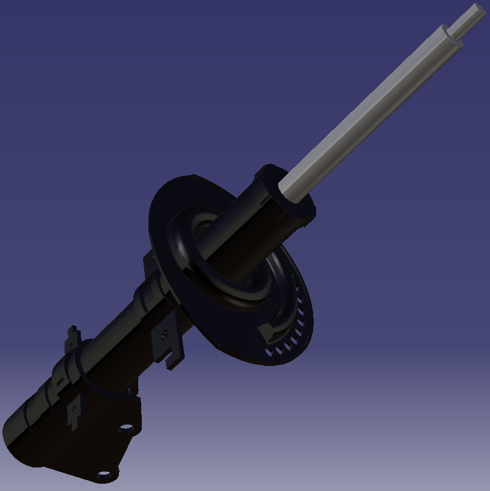
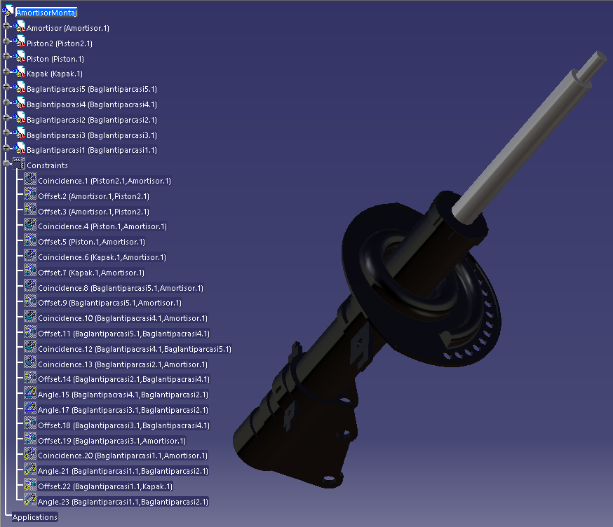

Amortisör ölçümü ve CAD montajı
Sanayiden temin ettiğim amortisörün ölçülerini alarak parçalarını CATIA ortamında modelledim ve montajını oluşturdum.
Süreç ve katkım
Taşıt Teknolojisi dersi kapsamında yürüttüğüm çalışmanın ölçüm, parça modelleme, montaj ve raporlama aşamalarını tek başıma tamamladım. Raporda amortisörün görevini ve çalışma prensibini de ele aldım.
Sonuç: Gerçek parçadan alınan ölçülere dayalı CAD parça modelleri, montaj modeli ve çalışma prensibini açıklayan rapor.
